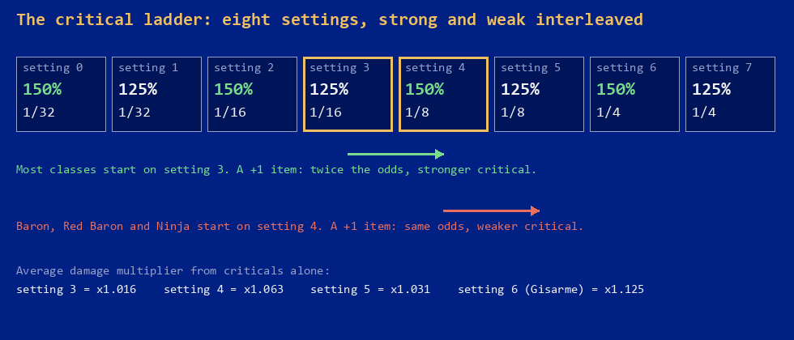

Home › Shining Force II › Every weapon
Shining Force II — Every Weapon
What each one really does, and the best pick for every class
The short version
The status screen shows one number for a weapon, its attack. The ROM stores more: a range, up to three equip effects, a spell it can cast, and flags for cursed and breakable. Every class also carries three settings the game never shows, for critical hits, double attacks and counters, and a handful of weapons move them.
Read together, the tables say things the game does not. The Critical Sword and the Rune Axe make a Baron, a Red Baron or a Ninja hit weaker criticals. The Gisarme kills outright one hit in four, with no resistance roll. The Ninja Katana has a bug that wipes out its owner's counterattacks. Cursed weapons lose a quarter of your turns, and once that is counted none of them beats the best clean weapon of its family. The Nazca Cannon is good, and not as good as its reputation.
All 85 weapons and the nine rings are listed below with everything the ROM knows about them, followed by a ranking for each promoted class.
The three settings nobody shows you
Each class definition in the ROM, five bytes at $1EE890, ends with a
byte the disassembly calls prowess. Its low four bits pick a critical-hit
setting, the next two a double-attack chance, the top two a counter chance. Double and
counter are simple: four steps, 1/32, 1/16, 1/8 and 1/4.
| Class | Critical | Double attack | Counter |
|---|---|---|---|
| Ninja | 150% at 1/8 | 1/16 | 1/8 |
| Red Baron | 150% at 1/8 | 1/32 | 1/8 |
| Baron | 150% at 1/8 | 1/32 | 1/16 |
| Hero | 125% at 1/16 | 1/16 | 1/8 |
| Thief | 125% at 1/16 | 1/16 | 1/32 |
| Master Monk, Wolf Baron | 125% at 1/16 | 1/32 | 1/8 |
| the other 14 promoted classes | 125% at 1/16 | 1/32 | 1/16 |
| the other 11 unpromoted classes | 125% at 1/16 | 1/32 | 1/32 |
The critical setting is where it gets strange. There are eight settings, and instead of running from weak to strong they alternate: the strong critical (+50% damage) and the weak one (+25%) take turns as the odds improve.

$ACCA: eight pairs of bytes, a chance and a damage shift.
An item with "critical +1" adds one to the setting and nothing else.Twenty-nine classes sit on setting 3, a weak critical one time in sixteen. For them a +1 weapon is a real upgrade: setting 4 is a strong critical one time in eight, worth about 4.6% more damage on average. The Baron, the Red Baron and the Ninja are already on setting 4. For them +1 lands on setting 5: the same one in eight, but the weak critical. About 3% less damage, from a weapon whose name promises the opposite.
Four weapons carry that +1: the Critical Sword, the Rune Axe, the Robin Arrow and the Nazca Cannon. Two of them can be held by the classes they hurt. The community disassembly treats the ordering as a slip by the developers and offers a build option that sorts the table. On a cartridge it is simply how the game works.
How a hit is resolved
The attack routine at $ABBE and its neighbours run in a fixed order, and
the order explains most of what follows.
- Dodge. One chance in 32. One in 8 if the target flies or hovers, unless the attacker is an archer-type, in which case it stays at one in 32.
- Damage. Attacker's ATT minus target's DEF, never less than 1. Land effect then keeps 230/256 of it at "15%" and 205/256 at "30%". An archer, sniper, ranger, bow knight or brass gunner shooting at something airborne adds a quarter.
- Critical. Rolled from the attacker's setting. A strong critical adds half the damage, a weak one a quarter. Master Monks and the Robot also have a separate one in sixteen chance of their special attack animation, which forces a critical.
- Double attack and counter. Rolled after the hit, from the attacker's and the target's settings. A counter also needs the attacker to be inside the defender's weapon range, which is why spears that reach two squares answer archers and lances do not.
Because the archer bonus is applied before the critical, the two multiply: a Sniper's strong critical on a Wyvern is the base damage times 1.25 times 1.5.
Weapons with something extra
The Gisarme
Its equip effect sets the critical to setting 6, a strong critical one time in four. Then the critical routine checks, by item number, whether the attacker holds a Gisarme, and if so replaces the critical with the cut-off: the target dies. The only test is whether the target is immune to Desoul. There is no resistance roll, so an enemy with "major" resistance to status spells dies as easily as a Gizmo. Of the 103 enemy types in the ROM, 23 are immune: the undead, the chess pieces, golems, and nearly every boss. On those the Gisarme is still a +42 sword with the best critical in the game.
The Ninja Katana, and its bug
"Double attack +1" takes the Ninja from 1/16 to 1/8. The routine that writes the new value back is meant to keep the other two settings and replace only the double-attack bits. It keeps the critical bits and nothing else, so the counter setting is zeroed: while he holds the Ninja Katana, a Ninja counters one time in 32 where he should counter one time in 8. The extra double attacks are worth more than the lost counters, so it is still the second-best weapon he can hold. It is the only item in the game with this effect, so nobody else is affected.
The Counter Sword
"Counter +1" works as written. On a Hero or a Red Baron, who start at 1/8, it gives 1/4, the highest counter rate an ally can have. On a Baron or a Bird Battler it gives 1/8.
Staves and a ring that pay every turn
The Holy Staff, the Mystery Staff and the Life Ring have an equip effect that the effect table maps to an empty routine. Their real behaviour is written into the end-of-turn code, again by item number: the Holy Staff restores 3 HP to its holder each turn, the Mystery Staff 2 MP, the Life Ring 5 HP.
Weapons that cast
Twenty weapons and five rings cast a spell from the Use command, for no MP. Two rules apply. You can only use a weapon your class could equip, so a Valkyrie in a Wizard's bag does nothing. And you do not have to equip it, so a Paladin can fight with the Mist Javelin and cast Attack from a Valkyrie he is only carrying. Every casting weapon is breakable: each use has one chance in four of cracking it, a cracked item is destroyed by its next use, and the repair man will fix a cracked one for a fee.
The Achilles Sword
Taros ignores every attack unless the attacker is an ally holding the Achilles Sword. The check runs at the start of every action and only a plain attack with that sword passes it, so spells and every other weapon do nothing to him, whoever uses them.
Two weapons for nobody
The Iron Ball (+44, cursed, Blaze 3) and the Taros Sword (+32, reach of two, Bolt 2) are dropped by Cameela and Taros. Their class list is empty. Since Use is limited to classes that can equip, nobody can cast from them either. They sell for a good price.
Cursed weapons, with the sums done
Seven weapons and two rings are cursed, and one of the seven is the Iron Ball that nobody can hold. They have the highest attack in their families, and five of them take something on top: five points of defence, ten of agility or two of movement. What the curse itself does is in two places in the code.
- At the start of any action, attack, spell or item, a cursed character has one chance in four of being "cursed and stunned". The turn is lost.
- After landing a hit that does not kill, there is one chance in two of recoil: the attacker loses an eighth of the damage dealt, plus one.
A quarter of all turns gone means a cursed weapon delivers three quarters of what its attack suggests. Take the Gladiator. With B as his attack without a weapon minus the target's defence, the Evil Axe averages (B+50) × 0.76 and the Rune Axe (B+42) × 1.06. The Evil Axe is behind at every value of B. Against the plain Great Axe from the shop it is ahead only while B is under 38. The same holds in every family: the Evil Knuckles lose to the Giant Knuckles, the Evil Shot to the Grand Cannon, the Evil Lance to the Mist Javelin, the Dark Sword to anything mithril. And the recoil and the stat penalties are not even in those numbers.
The cursed rings are a different case. The Black Ring and the Evil Ring add +10 and +15 attack to classes that do not attack, and what you want from them is the free Blaze 2 and Bolt 2. Carry them, and do not wear them.
The best weapon for each class
The tables below rank weapons by average damage per attack:
B is the character's attack without a weapon minus the target's defence. Late in the game a fighter's B against ordinary enemies is around 30, and 60 is a strong character on a soft target. Dodge and land effect are left out because they are the same for every weapon, and so is the second hit's chance of finding the target already dead. Counters, range, free spells and stat bonuses are not in the number. The notes cover them. Unpromoted classes are not ranked, because before promotion the shop weapons differ in attack and nothing else.
Hero
Bowie has a sword nobody else can hold, and it is the right answer: the Force Sword is +46 with no strings attached. The Levanter is four points behind and casts Blaze 3 for free, with a one in four chance of cracking each time. The Counter Sword takes his counter rate from 1/8 to 1/4, which the table below does not price in. The Critical Sword passes the Battle Sword once B goes over 33 and never gets near the top three.
| # | Weapon | ATT | Critical | Double | Counter | Avg. damage, B=30 | Avg. damage, B=60 |
|---|---|---|---|---|---|---|---|
| 1 | Force Sword | +46 | 125% at 1/16 | 1/16 | 1/8 | 82.0 | 114.4 |
| 2 | Levanter | +42 | 125% at 1/16 | 1/16 | 1/8 | 77.7 | 110.1 |
| 3 | Counter Sword | +39 | 125% at 1/16 | 1/16 | 1/4 | 74.5 | 106.8 |
| 4 | Battle Sword | +35 | 125% at 1/16 | 1/16 | 1/8 | 70.1 | 102.5 |
| 5 | Critical Sword | +32 | 150% at 1/8 | 1/16 | 1/8 | 70.0 | 103.9 |
| 6 | Dark Sword cursed | +50 | 125% at 1/16 | 1/16 | 1/8 | 64.7 | 89.0 |
Paladin and Pegasus Knight
The Mist Javelin is the highest attack in the family, reaches two squares, and has no drawback. The Holy Lance gives up three points for +5 DEF and a small free heal. The Halberd casts Bolt 1. The Valkyrie is the weakest of the four mithril lances, but it casts Attack on an ally up to three squares away, and you do not have to equip it to use it: carry one in the bag. The Evil Lance loses a quarter of your turns and two squares of movement on a class whose whole point is movement.
| # | Weapon | ATT | Critical | Double | Counter | Avg. damage, B=30 | Avg. damage, B=60 |
|---|---|---|---|---|---|---|---|
| 1 | Mist Javelin | +42 | 125% at 1/16 | 1/32 | 1/16 | 75.4 | 106.8 |
| 2 | Holy Lance | +39 | 125% at 1/16 | 1/32 | 1/16 | 72.3 | 103.7 |
| 3 | Halberd | +37 | 125% at 1/16 | 1/32 | 1/16 | 70.2 | 101.6 |
| 4 | Valkyrie | +33 | 125% at 1/16 | 1/32 | 1/16 | 66.0 | 97.4 |
| 5 | Chrome Lance | +31 | 125% at 1/16 | 1/32 | 1/16 | 63.9 | 95.3 |
| 6 | Evil Lance cursed | +48 | 125% at 1/16 | 1/32 | 1/16 | 61.3 | 84.8 |
Gladiator
The one class where the answer is unambiguous. The Rune Axe has the highest attack of any axe that is not cursed, and its +1 moves the Gladiator from 125% at 1/16 to 150% at 1/8. The Ground Axe is three points behind and adds a square of movement, which on a class that moves five matters more than it sounds.
| # | Weapon | ATT | Critical | Double | Counter | Avg. damage, B=30 | Avg. damage, B=60 |
|---|---|---|---|---|---|---|---|
| 1 | Rune Axe | +42 | 150% at 1/8 | 1/32 | 1/16 | 78.9 | 111.8 |
| 2 | Ground Axe | +39 | 125% at 1/16 | 1/32 | 1/16 | 72.3 | 103.7 |
| 3 | Atlas Axe | +35 | 125% at 1/16 | 1/32 | 1/16 | 68.1 | 99.5 |
| 4 | Heat Axe | +32 | 125% at 1/16 | 1/32 | 1/16 | 64.9 | 96.4 |
| 5 | Evil Axe cursed | +50 | 125% at 1/16 | 1/32 | 1/16 | 62.8 | 86.4 |
| 6 | Great Axe | +28 | 125% at 1/16 | 1/32 | 1/16 | 60.7 | 92.2 |
Baron
Here the Rune Axe backfires. A Baron already crits at 150% one time in eight, and the +1 turns that into 125% one time in eight. Its three extra points of attack keep it a hair ahead of the Ground Axe while B is under 60 and behind it above that, and the Ground Axe also gives +1 MOV, so the Ground Axe wins. A Baron can hold swords as well: the Counter Sword has the same +39 and doubles the counter rate to 1/8.
| # | Weapon | ATT | Critical | Double | Counter | Avg. damage, B=30 | Avg. damage, B=60 |
|---|---|---|---|---|---|---|---|
| 1 | Rune Axe | +42 | 125% at 1/8 | 1/32 | 1/16 | 76.6 | 108.5 |
| 2 | Ground Axe | +39 | 150% at 1/8 | 1/32 | 1/16 | 75.6 | 108.5 |
| 3 | Counter Sword | +39 | 150% at 1/8 | 1/32 | 1/8 | 75.6 | 108.5 |
| 4 | Atlas Axe | +35 | 150% at 1/8 | 1/32 | 1/16 | 71.2 | 104.1 |
| 5 | Battle Sword | +35 | 150% at 1/8 | 1/32 | 1/16 | 71.2 | 104.1 |
| 6 | Heat Axe | +32 | 150% at 1/8 | 1/32 | 1/16 | 67.9 | 100.8 |
Red Baron
Lemon joins with the Dark Sword equipped, which means he joins cursed. Take it off. His class counters at 1/8 where a Baron counters at 1/16, and the Counter Sword makes that 1/4, the highest counter rate any ally can reach. Everything said about the Baron and the Rune Axe applies to him too.
| # | Weapon | ATT | Critical | Double | Counter | Avg. damage, B=30 | Avg. damage, B=60 |
|---|---|---|---|---|---|---|---|
| 1 | Rune Axe | +42 | 125% at 1/8 | 1/32 | 1/8 | 76.6 | 108.5 |
| 2 | Ground Axe | +39 | 150% at 1/8 | 1/32 | 1/8 | 75.6 | 108.5 |
| 3 | Counter Sword | +39 | 150% at 1/8 | 1/32 | 1/4 | 75.6 | 108.5 |
| 4 | Atlas Axe | +35 | 150% at 1/8 | 1/32 | 1/8 | 71.2 | 104.1 |
| 5 | Battle Sword | +35 | 150% at 1/8 | 1/32 | 1/8 | 71.2 | 104.1 |
| 6 | Heat Axe | +32 | 150% at 1/8 | 1/32 | 1/8 | 67.9 | 100.8 |
Ninja
The Gisarme sets the critical rate to one in four, and with this one weapon a critical is not extra damage: the target is cut down on the spot unless it is immune to Desoul. There is no resistance roll. The Ninja Katana doubles the double-attack rate to 1/8 and works on bosses, but it silently resets the Ninja's counter from 1/8 to 1/32 (the bug described above). The Critical Sword is the worst thing you can hand Slade: it weakens his criticals.
| # | Weapon | ATT | Critical | Double | Counter | Avg. damage, B=30 | Avg. damage, B=60 |
|---|---|---|---|---|---|---|---|
| 1 | Gisarme | +42 | 150% at 1/4 | 1/16 | 1/8 | 86.1 | 121.9 |
| 2 | Ninja Katana | +39 | 150% at 1/8 | 1/8 | 1/32 | 82.5 | 118.3 |
| 3 | Katana | +34 | 150% at 1/8 | 1/16 | 1/8 | 72.2 | 106.1 |
| 4 | Critical Sword | +32 | 125% at 1/8 | 1/16 | 1/8 | 67.9 | 100.8 |
| 5 | Dark Sword cursed | +50 | 150% at 1/8 | 1/16 | 1/8 | 67.7 | 93.1 |
| 6 | Great Sword | +29 | 150% at 1/8 | 1/16 | 1/8 | 66.6 | 100.5 |
Bird Battler
Birdmen share the sword list minus the Hero's exclusives. The Counter Sword is the top non-cursed attack and takes the counter rate to 1/8. The Critical Sword passes the Battle Sword once B goes over 33.
| # | Weapon | ATT | Critical | Double | Counter | Avg. damage, B=30 | Avg. damage, B=60 |
|---|---|---|---|---|---|---|---|
| 1 | Counter Sword | +39 | 125% at 1/16 | 1/32 | 1/8 | 72.3 | 103.7 |
| 2 | Battle Sword | +35 | 125% at 1/16 | 1/32 | 1/16 | 68.1 | 99.5 |
| 3 | Critical Sword | +32 | 150% at 1/8 | 1/32 | 1/16 | 67.9 | 100.8 |
| 4 | Dark Sword cursed | +50 | 125% at 1/16 | 1/32 | 1/16 | 62.8 | 86.4 |
| 5 | Great Sword | +29 | 125% at 1/16 | 1/32 | 1/16 | 61.8 | 93.2 |
| 6 | Buster Sword | +26 | 125% at 1/16 | 1/32 | 1/16 | 58.7 | 90.1 |
Master Monk
Attack is all that matters here, and the Giant Knuckles have the most of it outside the cursed pair. The Evil Knuckles show +63 on the status screen and deliver less than the Iron Knuckles from the shop once the lost turns are counted. A Master Monk also has a one in sixteen chance of the spinning special attack, which the code treats as a forced critical. That is included in the numbers.
| # | Weapon | ATT | Critical | Double | Counter | Avg. damage, B=30 | Avg. damage, B=60 |
|---|---|---|---|---|---|---|---|
| 1 | Giant Knuckles | +55 | 125% at 1/16 | 1/32 | 1/8 | 90.3 | 122.2 |
| 2 | Misty Knuckles | +48 | 125% at 1/16 | 1/32 | 1/8 | 82.9 | 114.7 |
| 3 | Iron Knuckles | +43 | 125% at 1/16 | 1/32 | 1/8 | 77.6 | 109.4 |
| 4 | Evil Knuckles cursed | +63 | 125% at 1/16 | 1/32 | 1/8 | 74.1 | 98.0 |
| 5 | Brass Knuckles | +39 | 125% at 1/16 | 1/32 | 1/8 | 73.3 | 105.2 |
| 6 | Power Glove | +33 | 125% at 1/16 | 1/32 | 1/8 | 66.9 | 98.8 |
Sniper, Brass Gunner, Bow Knight
The Grand Cannon leads at any attack value you will see in the game. The Nazca Cannon, found in a chest on the Nazca Ship, is the interesting one: ten points under the Grand Cannon but with +1 critical. It passes the Buster Shot once B goes over 54 and the Hyper Cannon over 119. To pass the Grand Cannon it would need B=184, which no character reaches. All three gunner classes add 25% against anything that flies or hovers, and that bonus multiplies with the critical.
| # | Weapon | ATT | Critical | Double | Counter | Avg. damage, B=30 | Avg. damage, B=60 |
|---|---|---|---|---|---|---|---|
| 1 | Grand Cannon | +43 | 125% at 1/16 | 1/32 | 1/16 | 76.5 | 107.9 |
| 2 | Hyper Cannon | +40 | 125% at 1/16 | 1/32 | 1/16 | 73.3 | 104.7 |
| 3 | Buster Shot | +37 | 125% at 1/16 | 1/32 | 1/16 | 70.2 | 101.6 |
| 4 | Nazca Cannon | +33 | 150% at 1/8 | 1/32 | 1/16 | 69.0 | 101.9 |
| 5 | Evil Shot cursed | +51 | 125% at 1/16 | 1/32 | 1/16 | 63.6 | 87.2 |
| 6 | Great Shot | +29 | 125% at 1/16 | 1/32 | 1/16 | 61.8 | 93.2 |
Wizard and Sorcerer
A mage's weapon attack is close to irrelevant, so ignore the damage columns and look at the extras. The Mystery Staff gives back 2 MP every turn, which over a long battle is several extra casts. The Freeze Staff casts Freeze 3 for nothing, with the usual one in four chance of cracking. Until the mithril ones turn up, the Guardian Staff from the shop is +5 DEF for 2,380 gold. The Demon Rod takes ten points of agility and a quarter of your turns.
| # | Weapon | ATT | Critical | Double | Counter | Avg. damage, B=30 | Avg. damage, B=60 |
|---|---|---|---|---|---|---|---|
| 1 | Mystery Staff | +39 | 125% at 1/16 | 1/32 | 1/16 | 72.3 | 103.7 |
| 2 | Freeze Staff | +37 | 125% at 1/16 | 1/32 | 1/16 | 70.2 | 101.6 |
| 3 | Supply Staff | +32 | 125% at 1/16 | 1/32 | 1/16 | 64.9 | 96.4 |
| 4 | Demon Rod cursed | +50 | 125% at 1/16 | 1/32 | 1/16 | 62.8 | 86.4 |
| 5 | Great Rod | +28 | 125% at 1/16 | 1/32 | 1/16 | 60.7 | 92.2 |
| 6 | Mage Staff | +27 | 125% at 1/16 | 1/32 | 1/16 | 59.7 | 91.1 |
Vicar
Same logic as the mages. The Mystery Staff is the best staff for a healer who casts every turn. The Holy Staff restores 3 HP a turn to its holder and the Goddess Staff casts Aura 2 for free. The Wish Staff, dropped by Cameela, casts Attack.
| # | Weapon | ATT | Critical | Double | Counter | Avg. damage, B=30 | Avg. damage, B=60 |
|---|---|---|---|---|---|---|---|
| 1 | Mystery Staff | +39 | 125% at 1/16 | 1/32 | 1/16 | 72.3 | 103.7 |
| 2 | Goddess Staff | +31 | 125% at 1/16 | 1/32 | 1/16 | 63.9 | 95.3 |
| 3 | Demon Rod cursed | +50 | 125% at 1/16 | 1/32 | 1/16 | 62.8 | 86.4 |
| 4 | Holy Staff | +29 | 125% at 1/16 | 1/32 | 1/16 | 61.8 | 93.2 |
| 5 | Great Rod | +28 | 125% at 1/16 | 1/32 | 1/16 | 60.7 | 92.2 |
| 6 | Wish Staff | +26 | 125% at 1/16 | 1/32 | 1/16 | 58.7 | 90.1 |
All weapons and rings
Everything below is read from the item definitions at $16EA6, sixteen
bytes each. "Where" lists the first shop that stocks the item, chests and hidden spots,
enemy drops, the ally who joins with it, and whether the dwarven smith can forge it.
The icons are the game's own, 16 by 24 pixels, read from $1D8004.
How the smith picks is in The Mithril RNG.
SDMN swordsman · KNTE knight · WARR warrior · MAGE mage · PRST priest · ACHR archer · BDMN birdman · RNGR ranger · THIF thief · HERO hero · PLDN paladin · PGNT pegasus knight · GLDT gladiator · BRN baron · RDBN red baron · WIZ wizard · SORC sorcerer · VICR vicar · MMNK master monk · SNIP sniper · BRGN brass gunner · BWNT bow knight · BDBT bird battler · NINJ ninja
Swords
| Weapon | ATT | Range | Price | Extra | Flags | Classes | Where |
|---|---|---|---|---|---|---|---|
| Wooden Sword | +3 | 1 | 60 | SDMN BDMN HERO BRN BDBT NINJ RDBN | with Bowie | ||
| Short Sword | +5 | 1 | 140 | SDMN BDMN HERO BRN BDBT NINJ RDBN | shops from Granseal | ||
| Middle Sword | +8 | 1 | 340 | SDMN BDMN HERO BRN BDBT NINJ RDBN | shops from New Granseal / with Luke | ||
| Long Sword | +12 | 1 | 620 | SDMN BDMN HERO BRN BDBT NINJ RDBN | shops from Polca | ||
| Steel Sword | +16 | 1 | 1,120 | SDMN BDMN HERO BRN BDBT NINJ RDBN | shop in Hassan / chest, East Shrine | ||
| Achilles Sword | +19 | 1 | 1,350 | only weapon that hurts Taros | SDMN HERO | chest, Achilles Shrine | |
| Broad Sword | +22 | 1 | 1,600 | HERO BRN BDBT NINJ RDBN | shops from Hassan (later stock) / drop, Devil's Tail | ||
| Buster Sword | +26 | 1 | 2,600 | HERO BRN BDBT NINJ RDBN | shops from New Granseal (later stock) | ||
| Great Sword | +29 | 1 | 5,100 | HERO BRN BDBT NINJ RDBN | shops from Pacalon / with Skreech | ||
| Critical Sword | +32 | 1 | 7,200 | critical +1 | HERO BRN BDBT NINJ RDBN | chest, Mitula Shrine / mithril | |
| Battle Sword | +35 | 1 | 9,200 | HERO BRN BDBT RDBN | drop, Prism Flowers / mithril | ||
| Counter Sword | +39 | 1 | 13,000 | counter +1 | HERO BRN BDBT RDBN | drop, Odd Eye / mithril | |
| Levanter | +42 | 1 | 14,000 | use: Blaze 3 | breakable | HERO | mithril |
| Force Sword | +46 | 1 | 10,000 | cannot be sold | HERO | Force Sword Shrine, Devil's Head | |
| Dark Sword | +50 | 1 | 17,000 | DEF −5, use: Desoul 1 | cursed, breakable | HERO BRN BDBT NINJ RDBN | with Lemon |
Katanas
| Weapon | ATT | Range | Price | Extra | Flags | Classes | Where |
|---|---|---|---|---|---|---|---|
| Katana | +34 | 1 | 9,600 | NINJ | mithril | ||
| Ninja Katana | +39 | 1 | 11,500 | double attack +1 | NINJ | mithril | |
| Gisarme | +42 | 1 | 15,000 | critical set to 150% at 1/4, critical becomes instant kill | NINJ | mithril |
Knives
| Weapon | ATT | Range | Price | Extra | Flags | Classes | Where |
|---|---|---|---|---|---|---|---|
| Short Knife | +5 | 1 | 70 | THIF | shops from Granseal / with Slade | ||
| Dagger | +8 | 1 | 320 | THIF | shops from Ribble | ||
| Knife | +12 | 1 | 500 | THIF | shops from Bedoe | ||
| Thieve's Dagger | +17 | 1 | 940 | AGI +5 | THIF | shop in Hassan |
Axes
| Weapon | ATT | Range | Price | Extra | Flags | Classes | Where |
|---|---|---|---|---|---|---|---|
| Short Axe | +5 | 1 | 120 | WARR GLDT BRN RDBN | shops from Granseal / with Jaha | ||
| Hand Axe | +9 | 1 | 340 | WARR GLDT BRN RDBN | shops from New Granseal | ||
| Middle Axe | +13 | 1 | 610 | WARR GLDT BRN RDBN | shops from Bedoe | ||
| Power Axe | +17 | 1 | 1,100 | WARR GLDT BRN RDBN | shop in Hassan / with Randolf | ||
| Battle Axe | +21 | 1 | 1,370 | WARR GLDT BRN RDBN | shop in Hassan (later stock) | ||
| Large Axe | +25 | 1 | 2,250 | GLDT BRN RDBN | shops from New Granseal (later stock) | ||
| Great Axe | +28 | 1 | 4,600 | GLDT BRN RDBN | shops from Tristan / with Gyan | ||
| Heat Axe | +32 | 1 | 7,200 | use: Blaze 2 | breakable | GLDT BRN RDBN | drop, road to Roft / mithril |
| Atlas Axe | +35 | 1 | 9,600 | use: Blaze 3 | breakable | GLDT BRN RDBN | mithril |
| Ground Axe | +39 | 1 | 10,000 | MOV +1 | GLDT BRN RDBN | mithril | |
| Rune Axe | +42 | 1 | 10,000 | critical +1, use: Detox 2 | breakable | GLDT BRN RDBN | mithril |
| Evil Axe | +50 | 1 | 15,000 | DEF −5 | cursed | GLDT BRN RDBN | chest, Force Sword Shrine |
Lances and spears
| Weapon | ATT | Range | Price | Extra | Flags | Classes | Where |
|---|---|---|---|---|---|---|---|
| Wooden Stick | +3 | 1 | 70 | KNTE PLDN PGNT | with Chester | ||
| Short Spear | +6 | 1–2 | 120 | KNTE PLDN PGNT | shops from Granseal | ||
| Bronze Lance | +9 | 1 | 260 | KNTE PLDN PGNT | shops from Galam | ||
| Spear | +12 | 1–2 | 460 | KNTE PLDN PGNT | shops from New Granseal | ||
| Steel Lance | +16 | 1 | 810 | KNTE PLDN PGNT | shops from Bedoe / with Eric / with Rick | ||
| Power Spear | +20 | 1–2 | 1,270 | KNTE PLDN PGNT | shop in Hassan (later stock) | ||
| Heavy Lance | +23 | 1 | 1,600 | PLDN PGNT | shops from New Granseal (later stock) | ||
| Javelin | +26 | 1–2 | 3,400 | PLDN PGNT | shops from Ketto / with Higins | ||
| Chrome Lance | +31 | 1 | 6,900 | PLDN PGNT | shops from Tristan / with Jaro | ||
| Valkyrie | +33 | 1–2 | 7,700 | use: Attack 1 | breakable | PLDN PGNT | chest, Prism Flowers battlefield / mithril |
| Halberd | +37 | 1 | 7,300 | use: Bolt 1 | breakable | PLDN PGNT | mithril |
| Holy Lance | +39 | 1 | 9,300 | DEF +5, use: Heal (item) 1 | breakable | PLDN PGNT | mithril |
| Mist Javelin | +42 | 1–2 | 9,900 | PLDN PGNT | mithril | ||
| Evil Lance | +48 | 1 | 11,000 | MOV −2 | cursed | PLDN PGNT | hidden, Devil's Head |
Arrows and shells
| Weapon | ATT | Range | Price | Extra | Flags | Classes | Where |
|---|---|---|---|---|---|---|---|
| Wooden Arrow | +7 | 2 | 250 | ACHR RNGR SNIP BRGN BWNT | shops from Ribble / with May | ||
| Iron Arrow | +12 | 2 | 600 | ACHR RNGR SNIP BRGN BWNT | shops from Bedoe | ||
| Steel Arrow | +17 | 2 | 1,270 | ACHR RNGR SNIP BRGN BWNT | shop in Hassan / with Elric / with Janet | ||
| Robin Arrow | +21 | 2–3 | 1,480 | critical +1 | SNIP BRGN BWNT | shops from Hassan (later stock) | |
| Assault Shell | +25 | 2–3 | 2,500 | SNIP BRGN BWNT | shops from New Granseal (later stock) / with Rohde | ||
| Great Shot | +29 | 2–3 | 5,000 | SNIP BRGN BWNT | shops from Pacalon | ||
| Nazca Cannon | +33 | 2–3 | 3,000 | critical +1 | SNIP BRGN BWNT | chest, Nazca Ship | |
| Buster Shot | +37 | 2–3 | 6,800 | SNIP BRGN BWNT | drop, Geshp / mithril | ||
| Hyper Cannon | +40 | 2–3 | 8,700 | SNIP BRGN BWNT | mithril | ||
| Grand Cannon | +43 | 2–3 | 9,800 | use: Dispel 1 | breakable | SNIP BRGN BWNT | mithril |
| Evil Shot | +51 | 2–3 | 13,000 | DEF −5 | cursed | SNIP BRGN BWNT | hidden, Galam Castle |
Rods and staves
| Weapon | ATT | Range | Price | Extra | Flags | Classes | Where |
|---|---|---|---|---|---|---|---|
| Wooden Rod | +3 | 1 | 60 | MAGE PRST WIZ SORC VICR | shops from Granseal / with Kazin / with Sarah | ||
| Short Rod | +5 | 1 | 130 | MAGE PRST WIZ SORC VICR | shops from Galam / drop, Galam Castle | ||
| Bronze Rod | +8 | 1 | 360 | MAGE PRST WIZ SORC VICR | shops from Polca | ||
| Iron Rod | +12 | 1 | 560 | MAGE PRST WIZ SORC VICR | shop in Hassan | ||
| Power Stick | +15 | 1 | 1,050 | MAGE PRST WIZ SORC VICR | shop in Hassan / drop, southeast desert / with Karna / with Tyrin | ||
| Flail | +19 | 1 | 1,490 | WIZ SORC VICR | shops from Hassan (later stock) | ||
| Guardian Staff | +22 | 1 | 2,380 | DEF +5 | WIZ SORC VICR | shops from New Granseal (later stock) | |
| Indra Staff | +25 | 1 | 3,200 | use: Magic Drain 1 | breakable | WIZ SORC VICR | shops from Ketto / with Frayja / with Taya |
| Wish Staff | +26 | 1 | 6,100 | use: Attack 1 | breakable | VICR | drop, Cameela |
| Mage Staff | +27 | 1 | 6,300 | use: Blaze 2 | breakable | WIZ SORC | drop, inside Moun / with Chaz |
| Great Rod | +28 | 1 | 7,900 | WIZ SORC VICR | mithril | ||
| Holy Staff | +29 | 1 | 9,000 | +3 HP every turn | VICR | drop, outside the Ancient Tower / mithril | |
| Goddess Staff | +31 | 1 | 9,700 | use: Aura 2 | breakable | VICR | mithril |
| Supply Staff | +32 | 1 | 8,500 | use: Magic Drain 1 | breakable | WIZ SORC | mithril |
| Freeze Staff | +37 | 1 | 9,500 | use: Freeze 3 | breakable | WIZ SORC | mithril |
| Mystery Staff | +39 | 1 | 10,000 | +2 MP every turn | WIZ SORC VICR | mithril | |
| Demon Rod | +50 | 1 | 12,500 | AGI −10, use: Magic Drain 1 | cursed, breakable | WIZ SORC VICR | hidden, Dwarven Village |
Knuckles
| Weapon | ATT | Range | Price | Extra | Flags | Classes | Where |
|---|---|---|---|---|---|---|---|
| Leather Glove | +26 | 1 | 1,300 | MMNK | shops from Hassan (later stock) | ||
| Power Glove | +33 | 1 | 1,800 | MMNK | shops from New Granseal (later stock) | ||
| Brass Knuckles | +39 | 1 | 2,900 | MMNK | shops from Tristan / with Sheela | ||
| Iron Knuckles | +43 | 1 | 4,800 | MMNK | shops from Moun | ||
| Misty Knuckles | +48 | 1 | 5,500 | use: Magic Drain 1 | breakable | MMNK | mithril |
| Giant Knuckles | +55 | 1 | 7,500 | use: Muddle 1 | breakable | MMNK | mithril |
| Evil Knuckles | +63 | 1 | 9,500 | cursed | MMNK | chest, Yeel |
Weapons nobody can equip
| Weapon | ATT | Range | Price | Extra | Flags | Classes | Where |
|---|---|---|---|---|---|---|---|
| Taros Sword | +32 | 1–2 | 10,000 | use: Bolt 2 | breakable | nobody | drop, Taros |
| Iron Ball | +44 | 1 | 3,800 | use: Blaze 3 | cursed, breakable | nobody | drop, Cameela |
Rings
| Weapon | ATT | Range | Price | Extra | Flags | Classes | Where |
|---|---|---|---|---|---|---|---|
| Protect Ring | 3,000 | DEF +5, use: Boost 1 | breakable | everyone | drop, Devil's Tail | ||
| Quick Ring | 3,000 | AGI +5 | breakable | everyone | hidden, Bedoe | ||
| Running Ring | 3,000 | MOV +2 | everyone | hidden, Creed's Mansion | |||
| White Ring | 5,000 | DEF +10, use: Aura 2 | breakable | HERO VICR | chest, Dwarven Village | ||
| Life Ring | 5,000 | +5 HP every turn | HERO PLDN PGNT GLDT BRN WIZ SORC VICR MMNK SNIP BRGN BDBT WFBR BWNT PHNX NINJ MNST RBT GLM RDBN | chest, Elven Village battlefield | |||
| Power Ring | +5 | 3,000 | use: Attack 1 | breakable | everyone | drop, road east of Ribble | |
| Black Ring | +10 | 5,000 | use: Blaze 2 | cursed, breakable | WIZ SORC | drop, outside Ketto | |
| Evil Ring | +15 | 5,000 | use: Bolt 2 | cursed, breakable | WIZ SORC VICR | drop, road to the Ancient Shrine |
Method
The item, class and enemy tables were parsed straight from the US ROM; the routines
were read in the ShiningForceCentral disassembly, which assembles back to the retail
image. The ones quoted are the damage calculation at $ABBE, the critical
routine at $AC4E with its table at $ACCA, double and counter at
$B00E, the equip effects around $8B22, item breakage at
$BBE6 and the end-of-turn effects in the battle loop. Where the disassembly
offers "standard build" fixes, this page describes the unpatched game.
The full table, with the class settings, is in sf2-weapons.json.